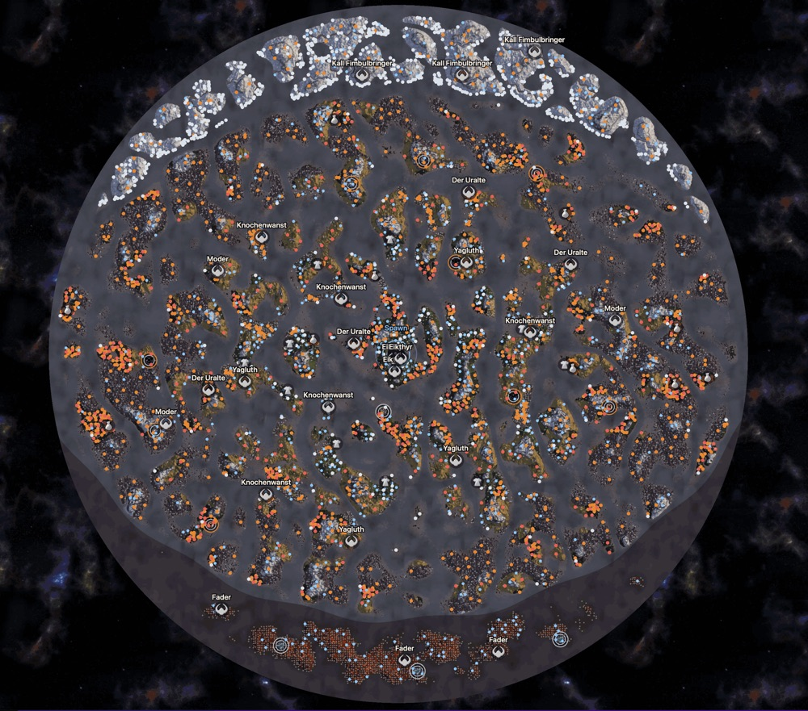

Wer ist online, wer spielt am meisten, wie weit ist die Welt
Im Save gesetzt, Bedeutung noch nicht zugeordnet (neuere Spielinhalte).

Seed qUM3MUSMst · Karte erzeugt mit valheim.tools (Seed dort eingeben für die interaktive Karte). Klick aufs Bild öffnet die volle Größe.